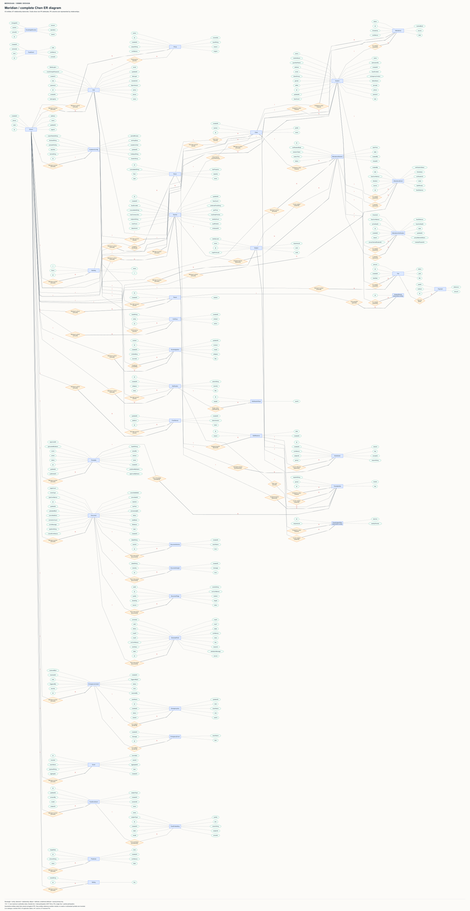
Chen ER and relational schema mapping
Blue entity rectangles, orange relationship diamonds and green attribute ovals. Horizontal schema rows show underlined primary keys and coloured foreign keys, with arrows pointing to the referenced key. Generated from the actual PostgreSQL database.
43 tables441 mapped attributes67 declared foreign keys
Complete diagrams
Use Open SVG to zoom without losing text clarity. Complete images are large posters; use the module images for readable report pages. Grey nodes/rows are external references. Only declared SQL FKs get arrows.
Modules
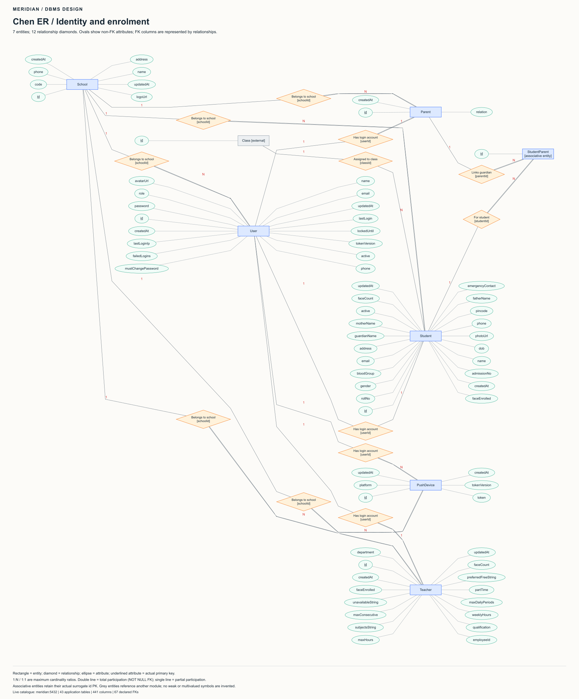
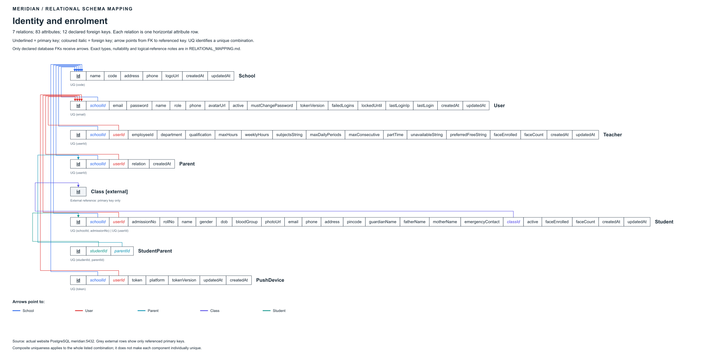
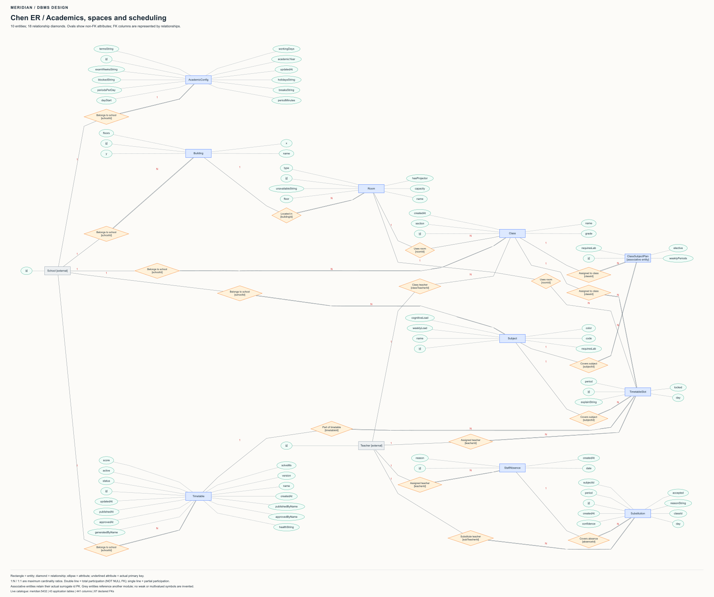
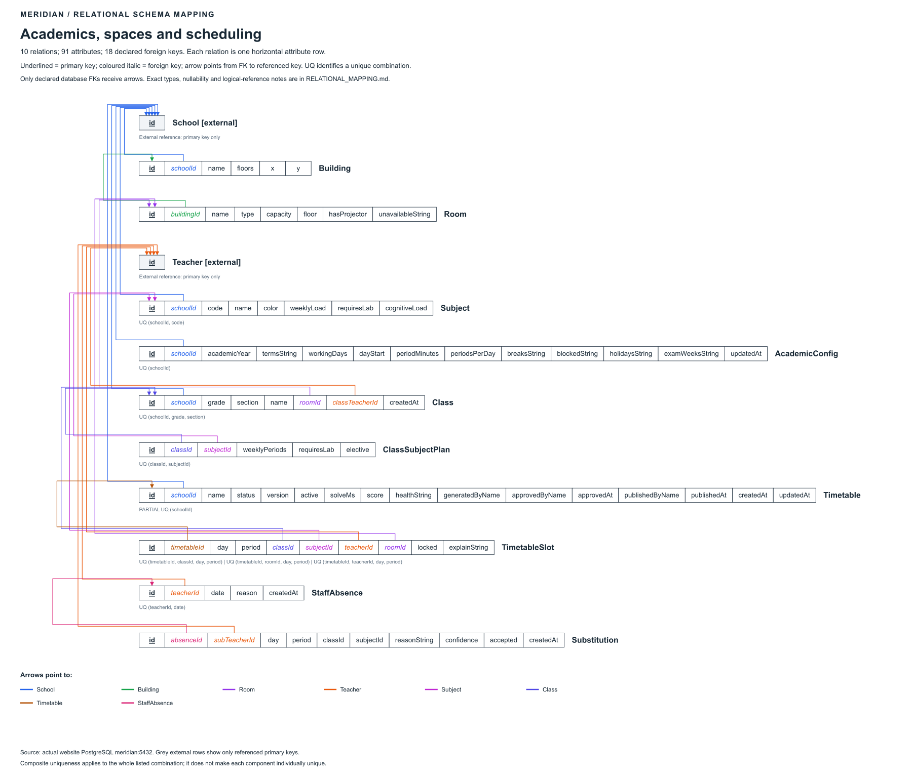
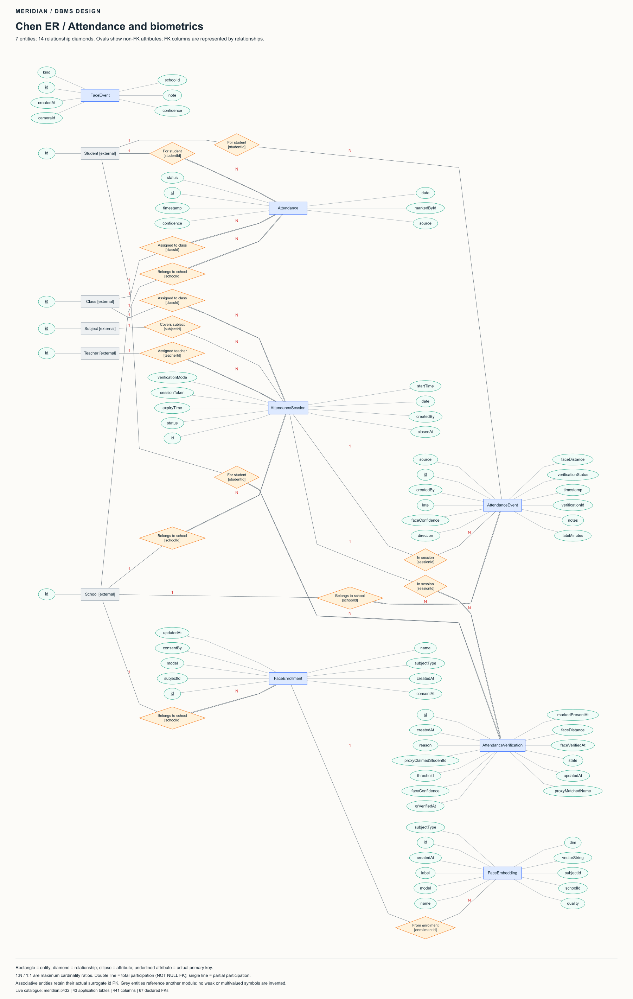
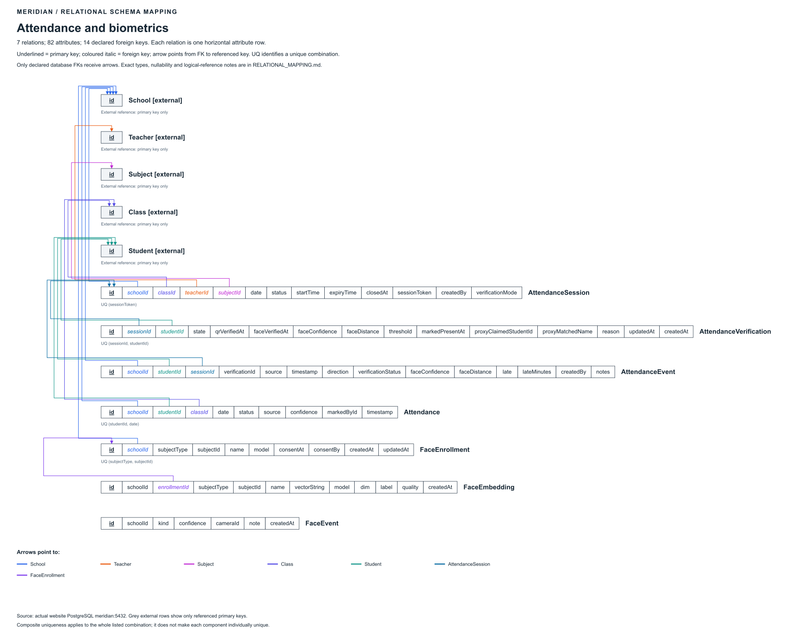
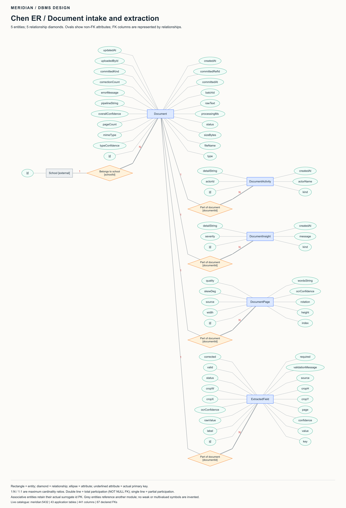
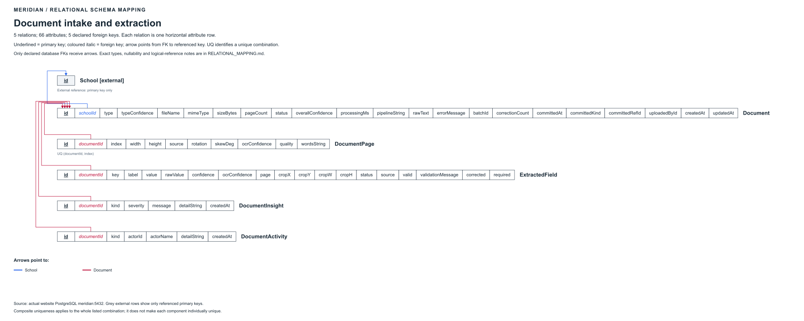
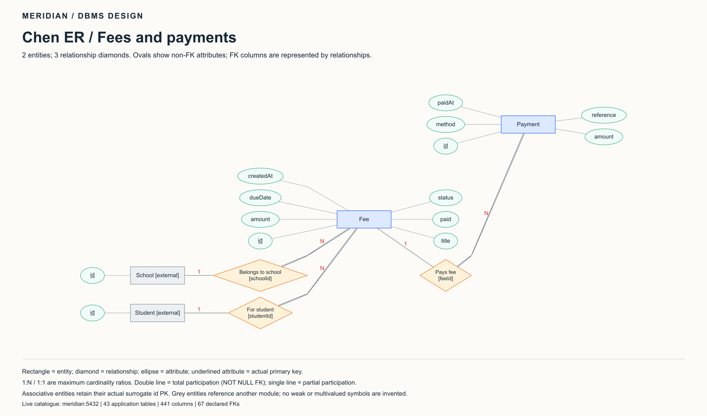
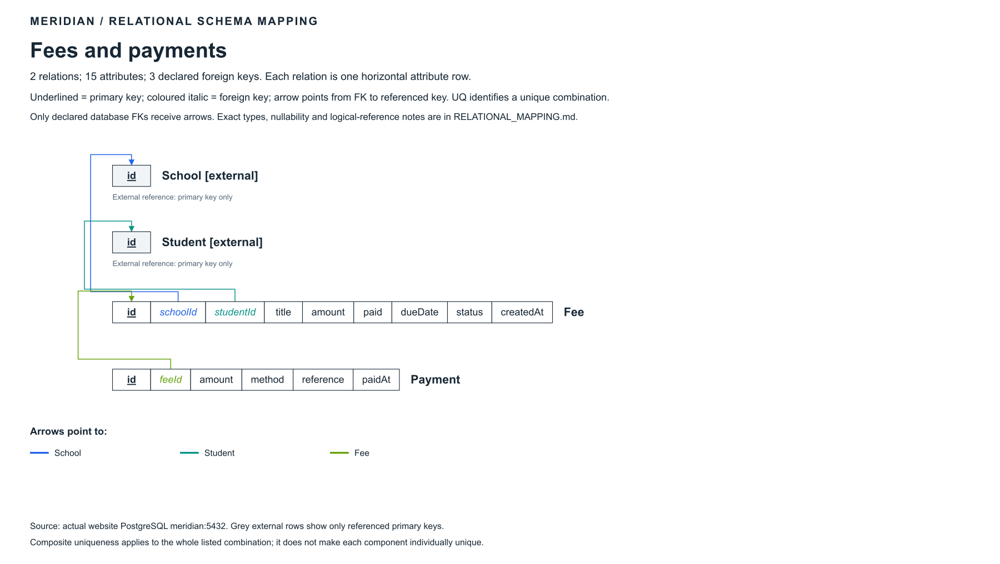
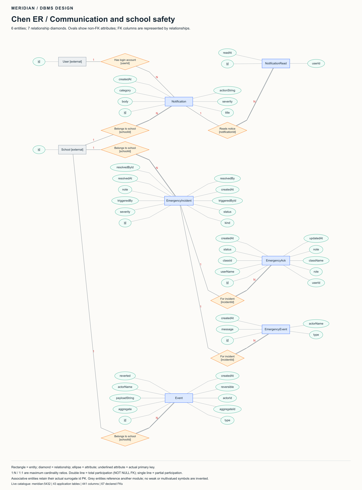
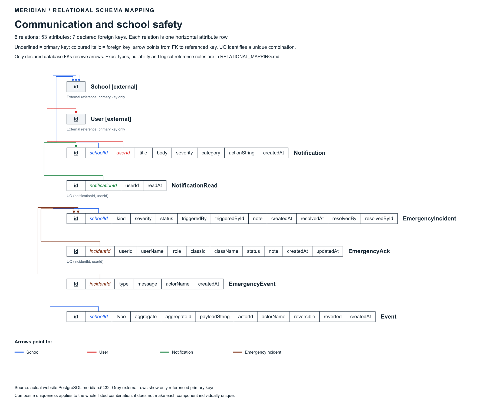
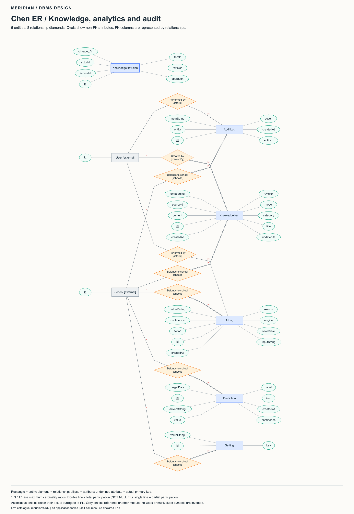
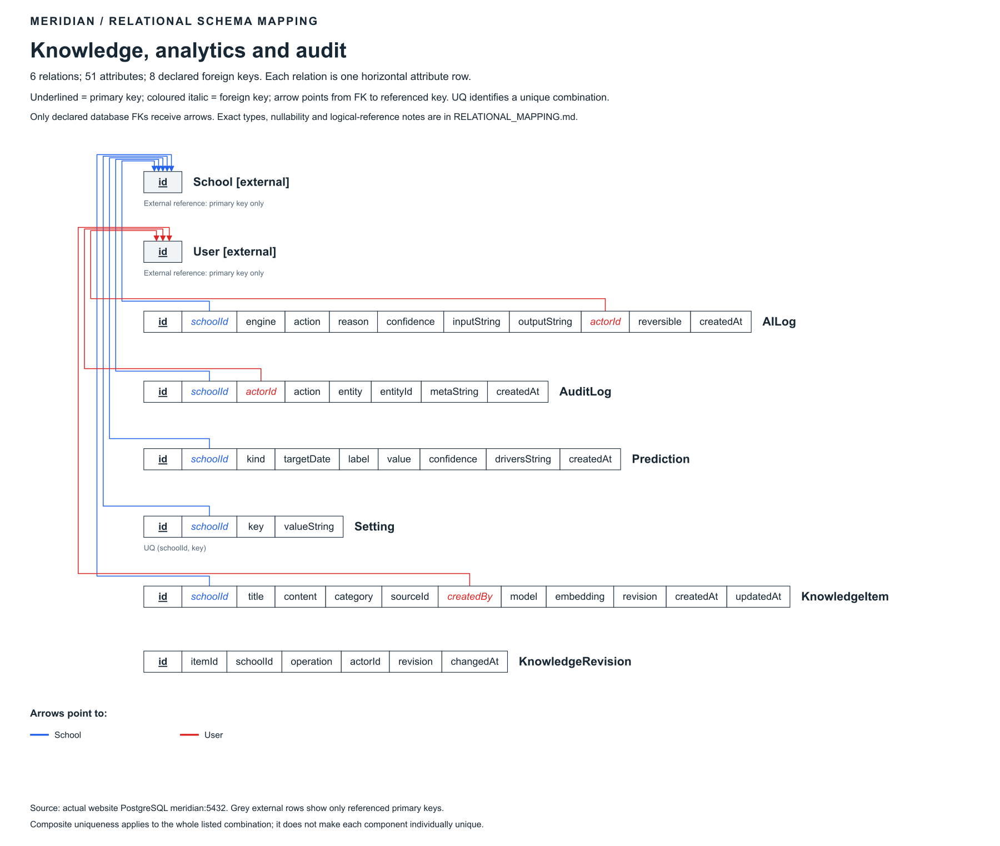
Current crow's-foot notation and table-box mapping


Schema source: meridian:5432. Export: 2026-11-10T08:47:28.892Z. No application records or database schema were modified.